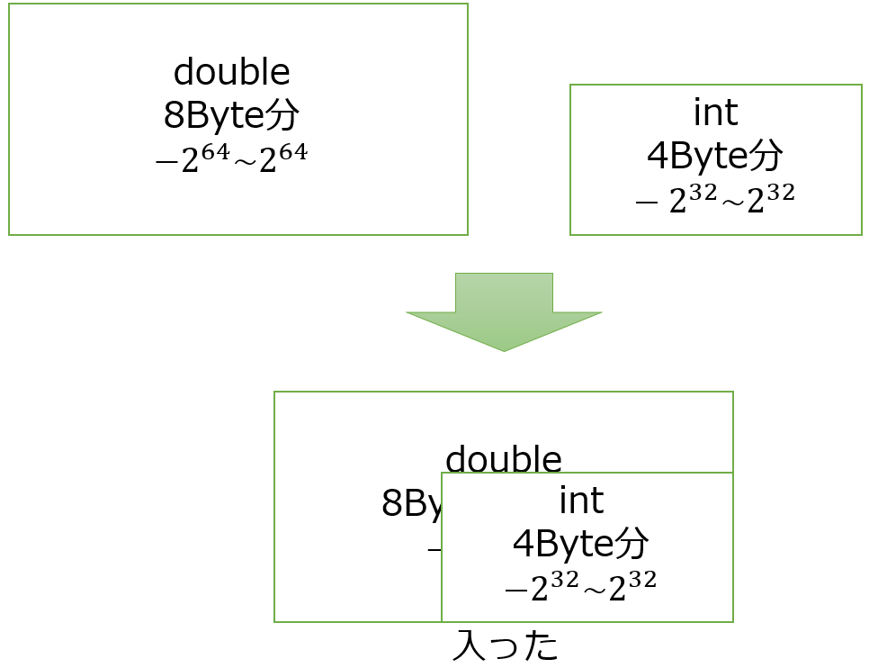

変数とその宣言¶
変数の型¶
一部のプログラム言語を除き、変数(=値を格納する箱)を 使う時には変数の容量や何を入れるのか(型)を定義する必要があります。 そのため、変数の型を知りましょう。
型名 |
役割 |
|---|---|
int |
整数型 |
long int |
大きな整数 |
float |
浮動小数点付き |
double |
実数 |
boolean |
真偽値 (0/1) |
char |
1文字 |
String |
文字列 |
変数を使う上で¶
宣言した型の領域を超えるとオーバーフローするので気を付けてください。
以下に例を示しているので実行してみてください。
0/1の関係で 01111111(127) → 10000000(-128) となります。
(例)実行してみて
public class test{
public static void main(String[] args){
byte num=127;
num++;
System.out.println(num);
}
}
それ以外にも小数点以下の計算を行う時には誤差が生じます。パソコンは2進数で動いているので
で表される数値以外仕方がない。 しかし、誤差が小さくなるようなAPIはありますので それをご利用ください。
(例)実行してみて
public class test{
public static void main(String[] args){
double num = 0;
for(int i=0;i<10;i++){
num += 0.1
}
System.out.println(num);
}
}
変数の宣言¶
変数の宣言は 型 変数名 という命令文で行われます。
変数名は Javaプログラムの基本構造で 記載したように分かりやすい名前を付けてください。
決して int a などとしないように。
また、初期値を設定することもできます。
(円周率など値を変更したくない変数は final をつけ、
変更できないようにします。)
(例)
int num1;
string paragraph = "Hello World!";
double num2 = 2.3;
演算子¶
演算子も設定されているので覚えましょう。 (文字列型の結合は文字列+文字列でできるよ)
演算子 |
役割 |
|---|---|
= |
代入 |
+, -, *, / |
四則演算 |
== |
イコール |
!= |
ノットイコール |
A>B |
AはBより大きい |
A<B |
AはBより小さい |
var++ |
var=var+1 |
var+=num |
var=var+num |
!num |
否定(numではない) |
オペランド¶
型の変換(キャスト)¶
int：整数、double：実数、String：文字列とあったが、 doubleの箱にはintの箱が入るのでJavaが自動で変換してくれる。 メモリ領域が小さい変数を大きい変数に代入するときはいい。

メモリ領域が大きい変数を小さい変数に代入することもできるけど... できるからといってなるべくしないように。無理やり押し込んでいるようなものです。